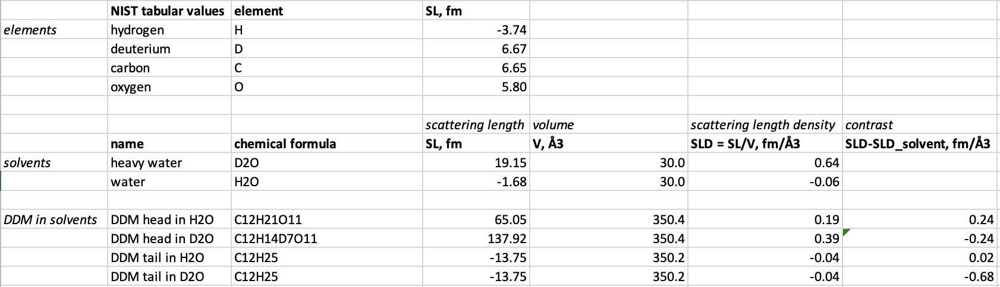

Home
Tutorial: Contrast Variation
Contributors: Andreas Haahr Larsen (Univ Cph)

Partly deuterated detergent DDM, measured in SANS with various amoumts of D2O in the solvent. At 100 D2O, the DDM molecules are matched out. Adapted from Midgaard et al., 2018, FEBS J. 285: 357-371, with permission.
Before you start
- We assume basic understanding of scattering length density and contrast in small-angle scattering
Learning outcomes
Be able to design a contrast-variation experiments in SANS for structure determination. Specifically, you will be able to:- Explain the relationship between contrast and signal-over-noise in SANS data.
- Tune contrasts of a particle such that the forward scattering is zero.
- Calculate scattering lenghts, scattering length densities and contrasts for a molecule, and use this to design a contrast-match experiment.
Part 1: Monodisperse spheres with various contrasts
Go to: Shape2SAS and simulate a spheres with a radius of 50 Å and contrast (excess scattering length density, $\Delta\mathrm{SLD}$) of 1 as Model 1, and a sphere with contrast $\Delta\mathrm{SLD}-1$ as Model 2 (set parameters and press Submit):

Why is the scattering the same despite that the $\Delta\mathrm{SLD}$ have opposite sign? (Hint)
Try to vary the contrast. How does a numerically larger $\Delta\mathrm{SLD}$ affect the simulated scattering, and why? (Hint)
Take-home message: higher contrast gives a larger signal-over-noise, and is therefore preferable.
Part II: Core-shell spheres
Go to: Shape2SAS, and simulate a spherical core-shell particle with inner radius of 30 Å and core $\Delta\mathrm{SLD}=-1$, and outer radius of 50 Å and shell $\Delta\mathrm{SLD}=1$. This can be done by combining two spheres as Model 1
Note on order of subunites in Shape2SAS
Overlapping points from different subunits are removed (by default).
The points from the subunits that are lowest in the list are removed, whereas points from subunits higher in the list remain.
So in the case of a cores-shell particle, the smaller sphere should be above the larger in the subunit list, so the overlapping points are excluded from the larger sphere.

What combination of radii of the core-shell (Model 1) would yield $I(0)$ of 0? (Hint). Try to simulate this. Due to the stochastic nature of Shape2SAS, $I(0)$ may not be exactly 0, but will be small.
Part III: Match-out DDM in 100% D2O
The goal of this subpart is to calculate how much to deuterate a DDM detergent in order to match it out in a SANS experiment at 100% D2O. This can be done by following these steps:- Use the chemical formulas to calculate the neutron coherent scattering lenghts for heavy water (D2O), DDM headgroups (C12H21O11) and DDM tailgroups (C12H25), using NIST tabular values (step-by-step guide for calculating SL for D2O).
- Use experimentally determined molecular volumes to calculate scattering lenghts densities $\mathrm{SLD}=SL/V$ and contrasts $\Delta\mathrm{SLD} = \mathrm{SLD}-\mathrm{SLD}_\mathrm{D2O}$ for heavy water (30.0 Å3), DDM headgroups (350.4 Å3) and DDM tailgroup (350.2 Å3).
- Put the results into a spreadsheet:

- Take exchangable hydrogens in account, i.e., hydrogens that are not strongly bound, and become deuterium when DDM is submerged in D2O.
There are 7 exchangable Hs in the the DDM headgroup, but none in the tailgroup, as these hydrogens are tightly bound to the carbons.
Calculate the $\mathrm{SLD}$ and $\Delta\mathrm{SLD}$ of the DDM headgroup after exchange (C12H14D7O11), where H denote non-exchangable hydrogen, and D denote hydrogen that have been exchanged with Ds from the solvent ("DDM head in D2O" in the spreadsheet above).
- Now, calculate how many of the non-exchangable Hs that should be deuterated in the DDM head to match out these components, i.e. get zero contrast when solvated in D2O ($\Delta\mathrm{SLD}=0$). For the head groups: $$SLD_\mathrm{head} = SLD_\mathrm{D2O}$$ $$SL_\mathrm{head} = SL_\mathrm{D2O}\frac{V_\mathrm{head}}{V_\mathrm{D2O}}$$ where $SL_\mathrm{head}=12SL_C+(14-n)SL_H+(7+n)SL_D+11SL_O$ and $n_\mathrm{head}$ is the average number of non-exchangable H's that should be deuterated: $$n_\mathrm{head} = (SL_\mathrm{D2O}\frac{V_\mathrm{head}}{V_\mathrm{D2O}}-12SL_C-14SL_H-7SL_D-11SL_O)/(SL_D-SL_H)$$
- Repeat this for the DDM tail groups.
Incoherent scattering in SANS
Incoherent scattering contribute a constant scattering signal (i.e. the same in all directions). Therefore, it carries no structural information.
Therfore, it is generally better to measure samples in D2O rather than in H2O in SANS, due to incoherent scattering from hydrogen, which result in a poor signal-to-noise ratio.
If you want numerical values, you may follow the (step-by-step guide for calculating SL for D2O), but use the inhoherent scattering lengths (Inc b) insted of the coherent scattering lengths (Coh b). Then you can calculate the total incoherent scatteirng lenght from the various components.
Challenges
- Challenge 1: You are interested in the structure of a polymer chain, inside a polymer melt. I.e. a melt consisting of a lot of the same polymer chains. However, when measuring, you just get a flat (constant) signal. How do you approach the problem? Hint: contrast variation may help.
- Challenge 2: You would like to contrast-match the phospholipid DLPC in D2O, in order to measure membrane proteins in an invisible lipid bilayer with SANS. Headgroup phospotidylcholine (PC) has the chemical formula C10H18NO8P (6 of these hydrogens are exchangable) and volume a of 319 Å3. The tail group dilauroyl (DL) has the chemical formula C22H46 (no exchangable hydrogens) and a volume of 666 Å3. How many of the (non-exghangeable) hydrogens should be deuterated in, respectively, head and tail to match-out DLPC in a solvent of 100% D2O?
Feedback
Help us improve the tutorials by- Reporting issues and bugs via our GitHub page. This could be typos, dead links etc., but also insufficient information or unclear instructions.
- Suggesting new tutorials/additions/improvements in the SAStutorials forum.
- Posting or answering questions in the SAStutorials forum.